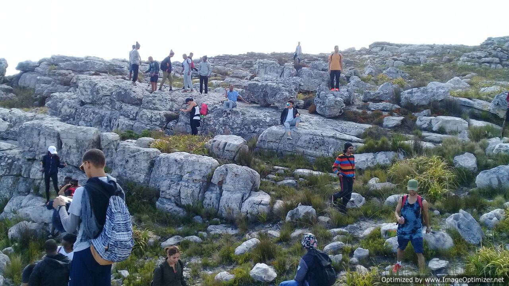
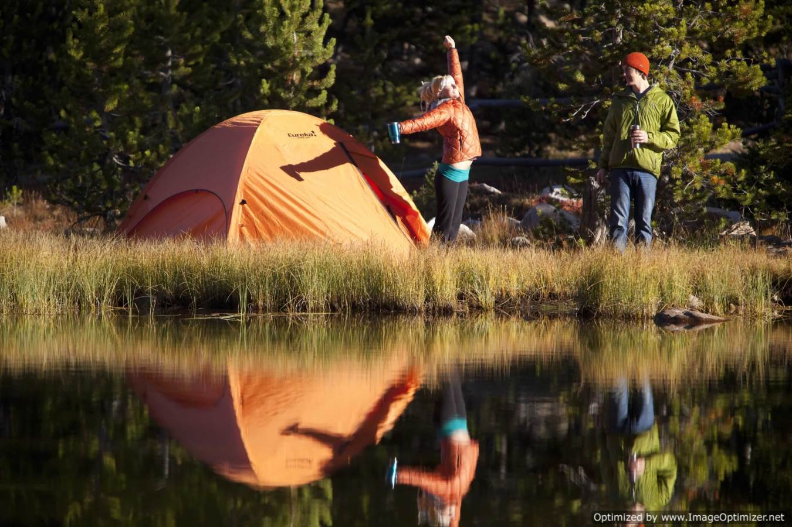
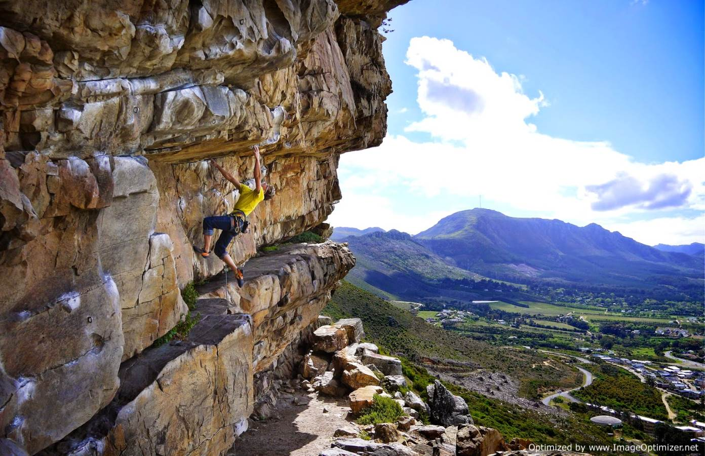
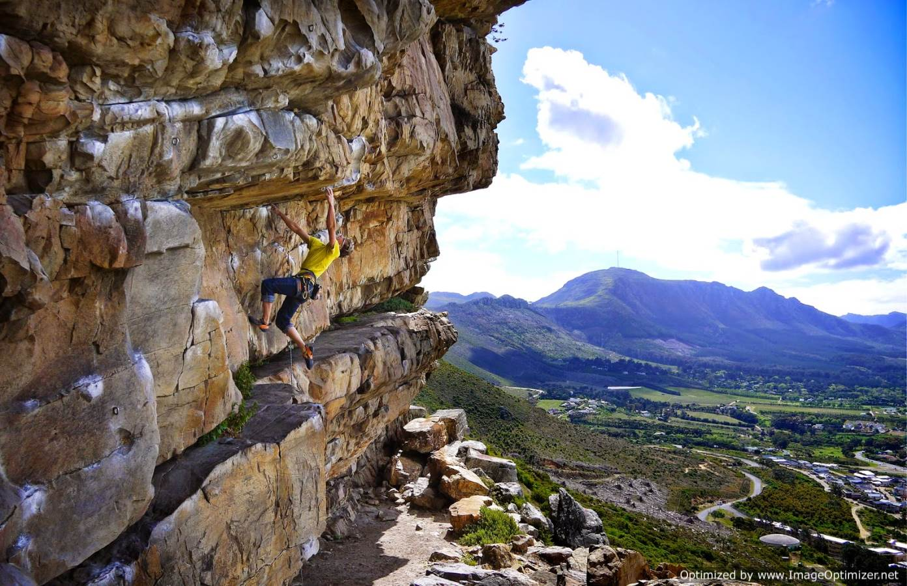
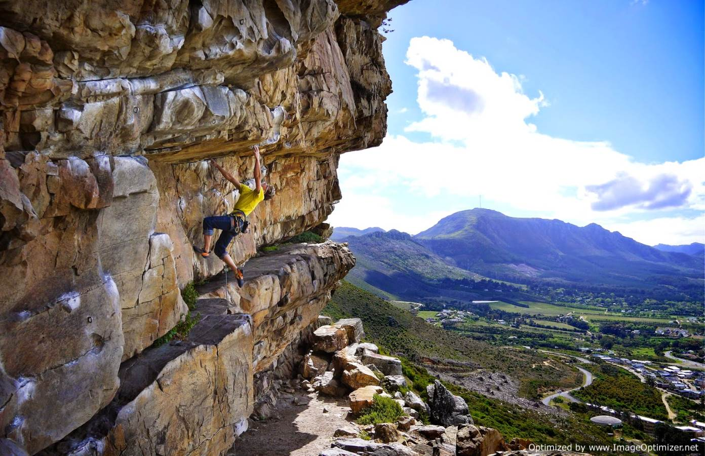

Home
Categories
Hiking
Fishing
Rock climbing
Camping
Gallery
Contact us

Fig 1. Hiking

Fig 2. Camping
Fig 3. Fishing

Fig 4. Rock climbing
 Fig 3. Fishing

Fig 4. Rock climbing
Fig 3. Fishing

Fig 4. Rock climbing